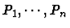
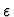
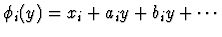
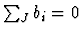

David Rupprecht
Laboratoire de Mathématiques, Université
de Nice-Sophia Antipolis
rupprech@math.unice.fr
We study the approximate GCD of n univariate polynomials

: we look for small perturbations (with respect to a tolerance
) of the coefficients which give a maximum degree GCD. We use both algebraic and numeric methods. We propose a generalized Sylvester matrix for n polynomials and so, generalized subresultants Sylvk. Using Singular Value Decomposition, we can easily find an upper bound for the degree of an approximate GCD. Moreover, we can give an algorithm to compute some set of perturbations for the polynomials and give some bounds for these perturbations. These bounds give us a lower bound for the degree. Using these two bounds, we can give a certification theorem for the degree of an approximate GCD and an algorithm to compute a candidate GCD. Moreover, we refine a previous theorem for 2 polynomials and give new bounds which are asymptotically optimal.
Using similar methods as for n univariate polynomials, we try to give some bounds and algorithm for finding multiple roots of a polynomial P, that is to say a perturbated polynomials which is the 'most singular' polynomial near P. The problem is more difficult. Indeed, for independent polynomials, we have a good filtration for an answer : the degree. For multiple roots, the degree of a GCD is not a good answer. We have to take into account the multiplicity of the roots. That gives us different filtrations and so different answers (for instance, would it be better to have the maximal degree or the maximal multiplicity ?). In this part, I decide to fix the maximal multiplicity and give some results for multiplicity 2 (and maybe 3).
Let P(x,y) be a bivariate polynomial with degree n. We compute a numerical Taylor expansion of the roots of P(0,y) :

, for i=1..n. If a subset Jcorresponds to a factor of P, we must have
. Moreover, we can show that, after a generic change of coordinates, this condition is sufficient. Then we construct some (approximate) factors in the fiber y=0 and compute the factors of P with Hensel liftings. This methods could be a start for an algorithm for factorizing numerical bivariate polynomials.